Create a directory named Plugins in your game's root directory
Extract the content of the downloaded plugin into the plugins directory. All major versions of UE4 are supported since 4.7. Choose the appropriate one to copy into the Plugins folder
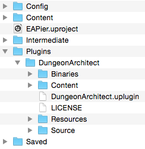
The plugin comes with sample assets and maps to get you started. Open the test map where everything is already setup
Install Dungeon Architect plugin
Download and extract the Quick Start Content Pack for the appropriate version of the engine
Copy the Content/DA_StarterPack folder into your game's Content folder
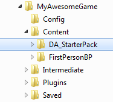
Open the sample map by navigating to Content > DA_StarterPack > Maps > DugeonDesignTime
From the world outliner, click the Dungeon1 Actor.
The scene is empty. In the details panel, you will find 3 buttons in the Dungeon category. Click the "Build Dungeon" button. This will create a procedural dungeon in your scene using a sample theme that comes along with the plugin
The config structure contains various parameters that can be tweaked to get different results
To build this setup yourself from scratch, refer the User Guide
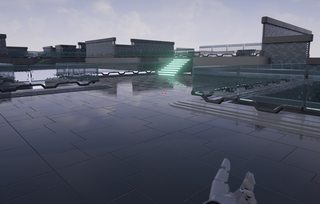
Build a dungeon (Runtime)
Random dungeons can be created at runtime (e.g. during level load) using a random seed and various tweakable parameters and have the map populated with powerups, spawn points, NPCs etc. All this can be done using pure blueprints and this sample map shows you just how to do this
Install Dungeon Architect plugin
Copy DA_StarterPack to your Content folder, if not done already (see previous section)
Open the sample map by navigating to Content > DA_StarterPack > Maps > DungeonRuntime
The scene is empty. Click the play button to have the procedural scene generated at runtime. A different level is generated on each run
Refer the level blueprint on how this is done
Level authoring by player (Runtime)
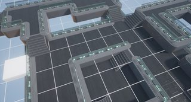
Dungeon Architect empowers not just your level designer, but also your players. This sample shows how you can have an in-game level editor and let your player design the layout of the levels using easy to use controls. Most of the heavy lifting is done by the plugin. This game mode is designed entirely in blueprints.
Install Dungeon Architect plugin
Copy DA_StarterPack to your Content folder, if not done already (see previous section)
Open the sample map by navigating to Content > DA_StarterPack > Maps > RuntimeLevelBuilder
Do not build the dungeon. Just hit play
Controls:
Use WASD to move around
Hit space to enter / exit build mode
In build mode, Left click to draw, right click to erase
Use the mouse wheel to change level (height)
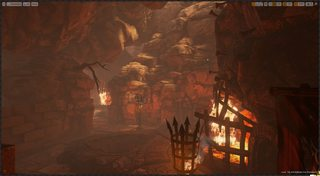
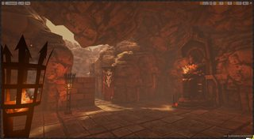
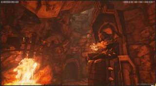
Infinity Blade: Fire Lands Theme (Hell Forge)
Generate cave like procedural levels using assets from Infinity Blade's Fire Lands asset pack
Download and extract the Quick Start Content Pack for the appropriate version of the engine
Copy the Content/DA_WoodenPier folder into your game's Content folder
Open the demo map Content/DA_WoodenPier/Maps/PierDesignTime
Note:In version 4.9. it looks like the asset isn't packaged properly and the subfolder (Materials, Textures, Meshes) appear in root. If so, Create a directory named WoodenPropPack and move the above 3 directories inside WoodenPropPack (this is how it was in 4.8). Then open the dungeon theme files
Procedural Deathmatch Map
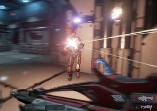
Generate a random map at runtime with AI bots, powerups, spawn points etc scattered all over the map using only blueprints. This project is based on the ShooterGame demo, to reuse the bot assets
Create a new project based on the ShooterGame project
Enable dynamic nav mesh generation, so NPCs can move in our dynamically generated level. Navigate to Edit > Project Settings > Navigation Mesh > Runtime Generation. Set it to Dynamic
Download and extract the Quick Start Content Pack for the appropriate version of the engine
Copy the Content/DA_ShooterDeathMatch folder into your game's Content folder
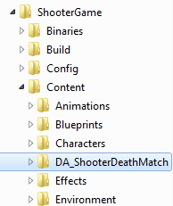
Open the demo map Content/DA_ShooterDeathMatch/Maps/DA_DeathMatchMap
The map is empty, click Play. A procedural map is generated when the game starts with NPC bots spawned all over the map
View the level blueprint on how this is done
Troubleshooting
Since the sample content in this project is just copied and not migrated, you might face external reference issues. In that case, open each of the 6 dungeon theme files (MetalLife/*Dungeons*) and resave them. You might have to move a node and resave.
Scifi Theme 2 (Manufactura K4)
A set of theme files to generate levels using the awesome Top-Down Sci Fi pack
Download and extract the Quick Start Content Pack for the appropriate version of the engine
Copy the Content/DA_SciFi_K4 folder into your game's Content folder
Top-Down Theme:
Open the demo map Content/DA_SciFi_K4/Maps/DATopDown
Select the Dungeon1 actor and click "Build Dungeon" from the Details window
FPS Theme:
Open the demo map Content/DA_SciFi_K4/Maps/DAFPS
Select the Dungeon1 actor and click "Build Dungeon" from the Details window
Oil Rig Theme:
Open the demo map Content/DA_SciFi_K4/Maps/DAOilRig
Tweak the parameters and rebuild for a different dungeon. Try painting the layout with the paint tool
Side Scroller Cave Demo (Experimental)
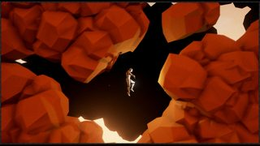
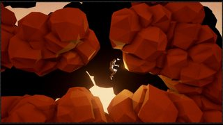
Demonstration of the new experimental Cave Builder
Create a new Side Scroller project (Make sure it is NOT 2D)
Install Dungeon Architect plugin
Copy the Content/DA_Cave_SideScroll folder from your quick start archive into your game's Content folder
Explore the maps in Content/DA_Cave_SideScroll
Hold Space key to fly
Paper2D Cave Demo (Experimental)
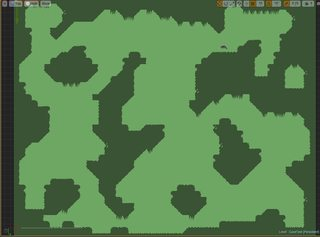
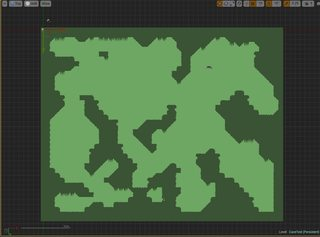
Demonstration of the new experimental Cave Builder in 2D. A marker emitter is used to beautify the tiles with decorative sprites
Create an empty project
Install Dungeon Architect plugin
Copy the Content/DA_Cave2D folder from your quick start archive into your game's Content folder
Explore the maps in Content/DA_Cave2D/Maps
Simple indoor theme (based on starter content)
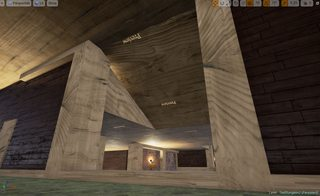
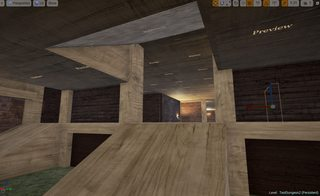
An simple indoor theme created using starter content
Create a FPS project with Starter Content
Install Dungeon Architect plugin
Copy the Content/DA_Starter_Indoor folder from your quick start archive into your game's Content folder
Explore the maps in Content/DA_Starter_Indoor/Maps
Multi-Storey Building
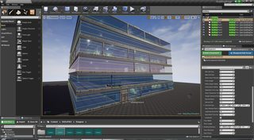
This example shows how Dungeon Architect can help you create a multi-storey building. Each floor is a separate dungeon and the building actor has configurable number of floors.
There's also a customizable door marker which places a door and instructs dungeon architect to place a room behind the door, which would then connect this room to the rest of the floor's dungeon
This example also shows how you could use a negation volume to constraint the dungeon creation to a certain bounds (i.e. bounds of the building walls). The building glass walls is another dungeon actor with a single platform volume to draw the glass walls
The building can be resized with width/length and can be moved around, including elevation.
The floors are connected together using a lift